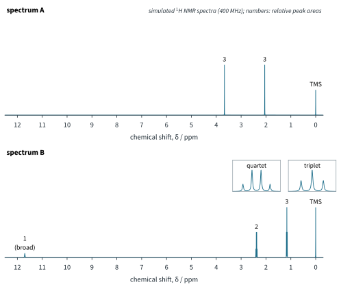
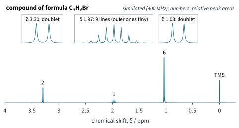
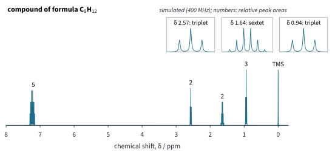
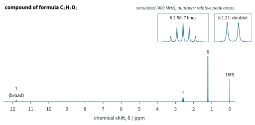

¹H NMR Spectroscopy 2 Tutorial
Chapter H3.3 · ¹H NMR Spectroscopy Tutorial 2
On this page
Use the Data Booklet tables of typical proton (1H) chemical shift values and of characteristic infra-red absorptions. Other values, marked "literature value" or "illustrative data", are given in the questions. Spectra are simulated (400 MHz, first order, literature shifts); numbers above the signals are relative peak areas. Keep unrounded values until the last step. Marks are shown in square brackets.
Question 1
For each compound, state the number of signals in its 1H NMR spectrum and the ratio of their areas.
- 2,2-dimethylpropane, C(CH3)4 [1]
- pentan-3-one, CH3CH2COCH2CH3 [2]
- 1,2-dichloroethane, ClCH2CH2Cl [1]
- 1,1-dichloroethane, CH3CHCl2 [2]
- ethane-1,2-diol, HOCH2CH2OH [2]
Question 2
For every set of protons in each compound, predict the δ range (from the Data Booklet), the relative peak area and the multiplicity of its signal.
- 1,1-dichloroethane, CH3CHCl2 [3]
- 2-chloropropane, CH3CHClCH3 [3]
- 1,3-dichloropropane, ClCH2CH2CH2Cl [3]
Question 3
Propan-1-ol, CH3CH2CH2OH, in CDCl3 gives these signals (literature values; the O–H position varies):
| δ | 3.58 | 2.3 | 1.57 | 0.93 |
|---|---|---|---|---|
| Relative area | 2 | 1 | 2 | 3 |
| Multiplicity | triplet | singlet, broad | sextet | triplet |
- Assign each signal to a group of protons, and explain the multiplicity of the signals at δ 1.57 and 0.93. [3]
- Describe and explain how the spectrum changes after the sample is shaken with a few drops of D2O. [2]
- The CH2 group at δ 3.58 has three hydrogen atoms near it on its neighbours, two on the CH2 and one on the O, yet its signal is a triplet, not a quartet. Explain why. [2]
Question 4
In H3.2 Tutorial 2 you saw that the Data Booklet IR table cannot tell butanal, CH3CH2CH2CHO, from butanone, CH3COCH2CH3. 1H NMR can.
- State the number of signals in the 1H NMR spectrum of each compound, and the ratio of their areas. [2]
- Identify a signal that tells the two compounds apart at a glance. Give its δ range and its relative area. [2]
- Predict the full 1H NMR spectrum of butanone: for each signal give the δ range, the relative area and the multiplicity. [3]
Question 5
In H3.2 Tutorial 2 you met liquids of formula C3H6O2. Fig 1 shows the 1H NMR spectra of two of its isomers, A and B.

- Identify A and B. Explain how each signal supports your answer. [4]
- Describe the effect of shaking each sample with D2O. [2]
- Give one absorption in the IR spectrum that distinguishes A from B, with its range from the Data Booklet. [2]
Question 6
There are four structural isomers of formula C4H9Br.
- Draw the four isomers and name them. [2]
- One isomer gives the spectrum in Fig 2 (below). Identify it, explaining how the areas and the splitting rule out the other three isomers. [4]
- Predict the 1H NMR spectrum of 2-bromo-2-methylpropane. [2]

Question 7
Three aromatic hydrocarbons of formula C9H12 are propylbenzene, C6H5CH2CH2CH3, (1-methylethyl)benzene, C6H5CH(CH3)2, and 1,3,5-trimethylbenzene, C6H3(CH3)3, in which the three CH3 groups are evenly spaced round the ring. Fig 3 shows the spectrum of one of them.

- Identify the compound, explaining every signal. [3]
- Predict the spectrum of 1,3,5-trimethylbenzene: the number of signals, their δ ranges, areas and multiplicities. [3]
- State two ways in which the spectrum of (1-methylethyl)benzene would differ from Fig 3. [2]
Question 8 (Further example)
The purity of a batch of ibuprofen (Mr 206.3, literature value) is found by qNMR. 15.32 mg of the ibuprofen and 7.05 mg of dimethyl sulfone, (CH3)2SO2 (Mr 94.1, literature value; purity 99.8 %, illustrative data), are dissolved together in CDCl3. The integral of the 6H doublet of its isobutyl (2-methylpropyl) CH3 groups divided by the integral of the dimethyl sulfone singlet (6H, near δ 3.0) is 0.946 (illustrative data).
- Suggest two reasons why dimethyl sulfone is a suitable internal standard. [2]
- Calculate the percentage purity of the ibuprofen. [3]
- Suggest one advantage of qNMR over an HPLC assay (H3.2 Part 1) for this measurement. [2]
Question 9
Propanone is reduced to propan-2-ol by sodium tetrahydridoborate (sodium borohydride), NaBH4 (11.7). The reaction is followed with a benchtop NMR spectrometer by measuring the area of the propanone CH3 singlet at δ 2.2 and of the propan-2-ol CH3 doublet at δ 1.2 (illustrative data):
| Time / min | Area at δ 2.2 (propanone) | Area at δ 1.2 (propan-2-ol) |
|---|---|---|
| 10 | 3.40 | 1.60 |
| 30 | 1.10 | 3.90 |
- Suggest why these two signals are chosen to follow the reaction. [2]
- Calculate the percentage of the propanone converted at each time. [3]
- A septet near δ 4.0 also grows as the reaction goes on. Identify the protons responsible and suggest why this signal is less useful for following the reaction. [2]
Question 10
Compound X has the formula C4H8O2. Its IR spectrum shows a very broad absorption from about 2500 to 3000 cm−1 and a strong absorption at 1710 cm−1 (illustrative data). Its 1H NMR spectrum is shown in Fig 4; the signal at δ 11.8 disappears when the sample is shaken with D2O.

- Use the IR spectrum to identify the functional group in X. [2]
- Use the 1H NMR spectrum to deduce the structure of X. Explain every signal. [5]
- Explain why the signal at δ 2.58 lies at a higher δ than the alkane range. [2]